{kind=link}

Небольшое вступление
Сайт thethingsnetwork.org, через который работают платы, описанные в этой статье, иногда вносит изменения в свой API. Этот проект актуален на Январь 2015 года. Получить информацию о различных изменениях можно по следующим ссылкам:
https://www.thethingsnetwork.org/forum/t/new-addre...
https://www.thethingsnetwork.org/wiki/Backend/Migr...
Если у вас есть проблемы с этим проектом, вы можете сообщить о них по Email support@dragino.com или создать новую тему о проблеме на форуме TTN forum (отдельное спасибо товарищу @CurlyWurly).
Технология
В этой статье мы будем использовать платы Lora Shield, MEGA 2560 и Raspberry Pi для создания одноканального шлюза LoRaWAN.
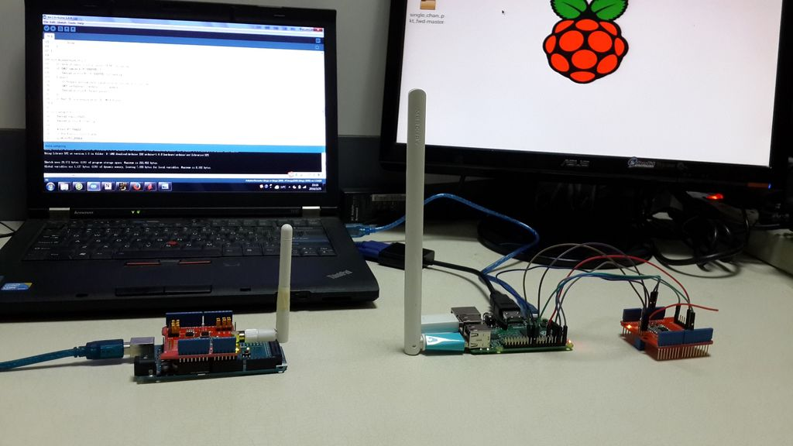
Технология LoRa - это технология беспроводной передачи данных на большие расстояния, с низкими энергетическими затратами, с низкой скоростью передачи данных. Передача данных возможна на расстояние до 15 км в сельской местности и до 2 км в плотной городской застройке. Использование технологии LoRa возможно в нескольких областях применения, таких как Интернет вещей, проведение измерений различными датчиками, безопасность, межмашинное взаимодействие (M2M).
Примечание
Описываемый здесь одноканальный шлюз сети LoRaWAN - это проверенная на практике реализация, которую можно использовать для разработки и тестирования узлов сети стандарта LoRa. Это не замена настоящего многоканального (multi SF) шлюза. Представленный здесь шлюз поддерживает некоторые функции сети LoRaWAN, но из-за примитивной одноканальной реализации этот шлюз не может полностью подерживать всю спецификацию LoRaWAN (и никогда не сможет это сделать). Этот шлюз, для разработки и тестирования, по умолчанию, использует бекэнд сайта TTN (https://www.thethingsnetwork.org).
Подробнее об использовании бэкэнда сайта TTN рассказано в другой статье: The summary of Thomas.
Шаг 1. Железо
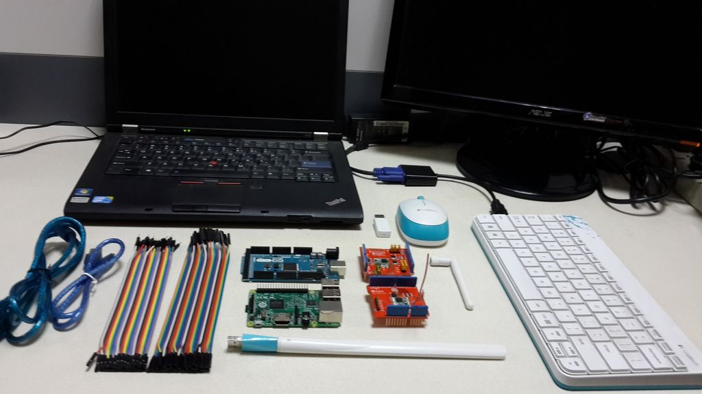
В этом проекте используются устройства, перечисленные в следующем списке:
Одна плата Lora Shield v95-868 подключается к Arduino Mega 2560, путем установки в стандартные разъемы, как "пирожок". Вторая такая же плата подключается к Raspberry Pi по схеме, приведенной на шаге 6 данной инструкции.
Шаг 2: Краткое введение в работу с платой LoRa Shield компании Dragino и использование сайта TTN Network
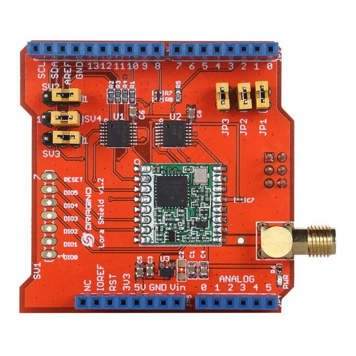 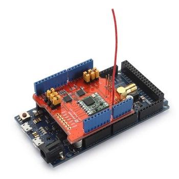 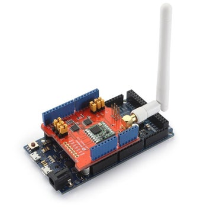
Плата Dragino Lora Shield - это трансивер дальнего радиуса действия, выполненный как плата расширения для платфоры Arduino. Эта плата использует библиотеки с открытым исходным кодом. Плата LoRa Shield позволяет пользователю отправлять данные на экстремально дальние расстояния с низкой скоростью передачи данных. Она поддерживает сверхширокополосную связь с расширенным спектром и высокую помехоустойчивость, одновременно сводя к минимуму потребление тока.
Плата Lora Shield основана на модуле RFM95W/RFM98W, который разработан для создания профессиональных сетей сбора и передачи данных через беспроводные сенсоры. Это могут быть системы орошения, системы интеллектуального учета, системы "умного города", системы обнаружения мобильных телефонов, системы автоматизации зданий, и т.д. Больше информации можно узнать здесь.
Сеть TTN network, представляемая сайтом http://thethingsnetwork.org, базируется на стандарте LoRaWAN. Это глобальная сеть передачи данных Интернета вещей, работающая на принципах краудсорсинга. Больше информации о ней можно получить на страницах вышеуказанного сайта.
Шаг 3. Структура сети
Конфигурация сети представлена на фото.
Шаг 4: Создание аккаунта в сети TTN
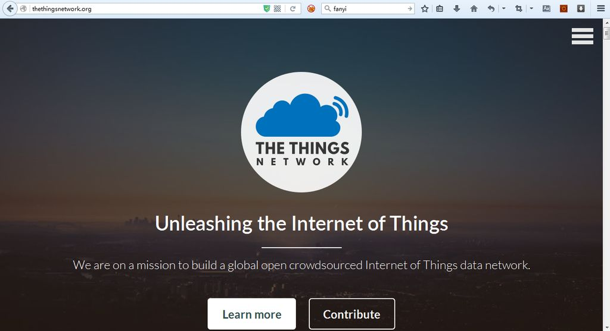
Перед тем, как начать связывать устройства в один проект, нужно зарегистрироваться на сайте TTN. Ссылка на страницу регистрации: http://thethingsnetwork.org/signup/.
Имеется два варианта создания зарегистрированных устройств в сети TTN. Во-первых, можно использовать GUI-интерфейс, расположенный по адресу: https://staging.thethingsnetwork.org. Регистрация устройства через GUI - это довольно простое действие.
Во-вторых, вы можете использовать утилиту командной строки, называемую ttnctl. Когда я начинал документировать последовательность действий для регистрации устройства, была доступна только утилита ttnctl. В основном, чтобы понять, как зарегистрировать устройство, нужно следовать руководству, размещенному по адресу: https://www.thethingsnetwork.org/wiki/Backend/ttnctl/ttnctl. Скачайте утилиту ttnctl, зарегистрируйтесь, создайте приложение. Можно использовать любой графический интерфейс (GUI). Потом, используя утилиту ttnctl, необходимо зарегистрировать конкретное (персональное) устройство. На этом же веб-сайте можно узнать, как производить различные специфические операции по изменению параметров устройств.
Шаг 5. Создание шлюза сети TTN Network
Запомните: создавать собственный шлюз LoRa не нужно, если неподалеку уже есть шлюз LoRa для сети TTN. В этом случае нет никакого смысла создавать свой собственный. В этой инструкции демонстрируется создание полной сетевой инфраструктуры, поэтому здесь будет показано, как создавать свой шлюз, невзирая на то, есть ли поблизости еще один LoRa шлюз или нет.
Войдите на сайт TTN под своим аккаунтом, и переключитесь на страницу управления шлюзами: https://console.thethingsnetwork.org/gateways.
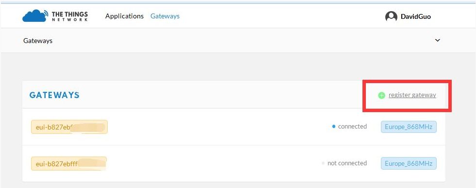
Нажмите "Add a gateway" (или Register gateway?) и вы попадете на страницу, где можно задать свойства вашего шлюза:
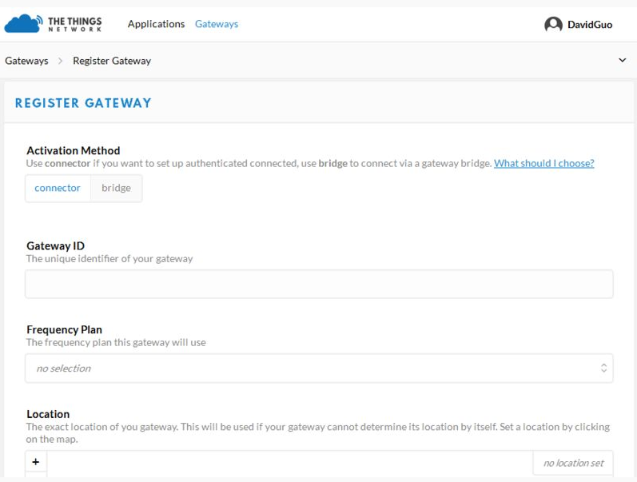
На следующем шаге необходимо получить Gateway ID, который будет доступен после того, как будет произведена настройка форвадинга пакетов на RaspberryPi.
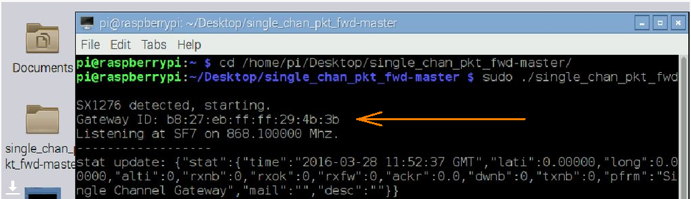
Затем надо прописать полученный Gateway ID в столбце Gateway EUI (в шестнадцатеричном формате, без двоеточий, заглавными буквами). Как мы можем видеть, в данном примере мы получили Gateway ID: b8:27:eb:ff:ff:29:4b:3b. Значит, нужно ввести значение B827EBFFFF294B3B в столбец Gateway EUI (видимо, все-таки, имется в виду поле ввода Gateway ID).
Кстати, необходимо также изменить и другие настройки. Например, необходимо установить нужный частотный план (Frequency plan). Нажав на адрес шлюза, можно изменить и другие параметры, путем нажатия на кнопку "Settings". После изменения настроек их нужно сохранить. На скриншоте ниже видно, что статус шлюза находится в состоянии "Соединение установлено" (connected). Это означает, что мы только что создали работающий шлюз для нашей учетной записи TTN.
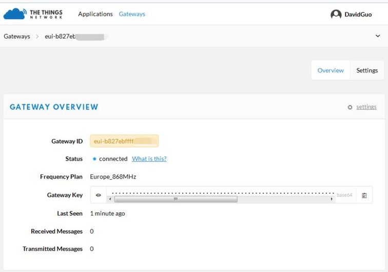
Дополнительно, мы можем проверить статус TTN-шлюза на странице https://staging.thethingsnetwork.org/gatewaystatus/. Выглядеть эта страница будет примерно так:
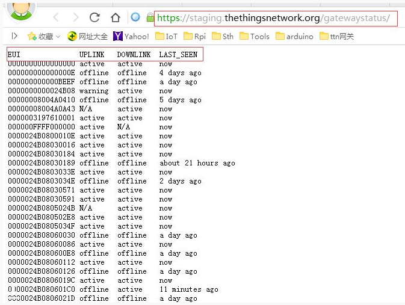
Шаг 6. Создание приложения в сети TTN
На этом шаге нам необходимо создать приложение в сети TTN.
1. Откройте сладующую страницу https://staging.thethingsnetwork.org/applications, и вы увидите форму ввода, такую, как на скриншоте ниже:
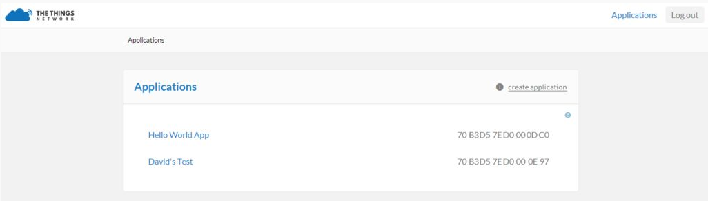
2. Нажмите "Create application" для создания нового приложения, и задайте ему имя:
3. Вы можете увидеть информацию о новом созданном приложении после нажатия синей кнопки "Create application".
4. Регистрация устройства. В данном проекте нам необходимо выбрать тип устройства APB, после чего нажать "Register device" (register device -> ABP -> Register). Для устройства формата ABP необходимо будет установить App Session Key и Network Session key. Оба должны быть сгенерированы случайным образом (рекомендуется).
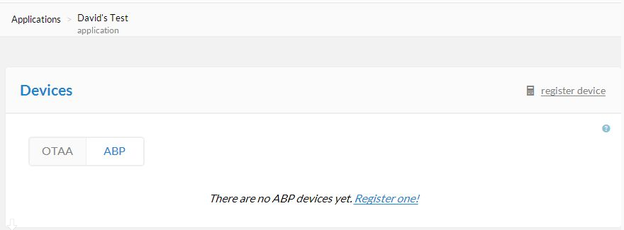
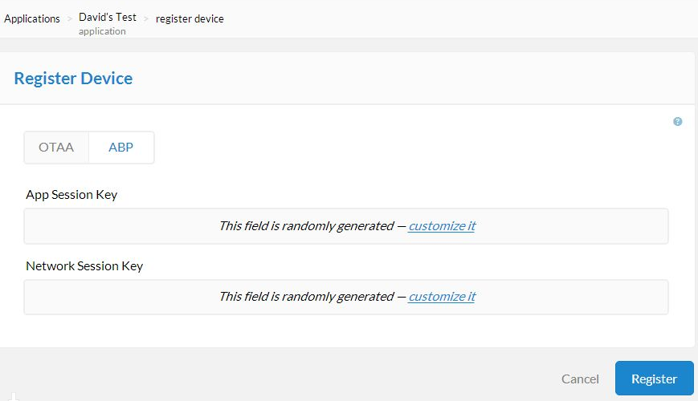
5. Мы можем просмотреть информацию об устройстве на последующей открываемой странице. Будут видны параметры Dev EUI,App EUI,Dev Address,NWKSKEY,APPSKEY, и т.д. Они будут использоваться на следующих шагах настройки приложения.

Вернувшись на страницу приложения (Application), можно увидеть все устройства, которые зарегистрированы для данного приложения. Они будут перечислены в столбце "Devices". А кнопка Messages позволяет посмотреть какие данные были отправлены всеми устройствами, входящими в данное приложение.
Кроме того, вы можете использовать второй вариант настройки приложения и шлюза, воспользовавшись консолью https://console.thethingsnetwork.org/
Шаг 7. Создание одноканального LoRaWan-шлюза
На этом шаге мы будем использовать Raspberry Pi и плату LoRa Shield для создания одноканального LoRaWAN-шлюза. Мы должны будем сконфигурировать Raspberry Pi и соединить ее с проводами с платой LoRa Shield. Полная последовательность действий описана ниже.
Конфигурирование
Стандартные настройки
LoRa: SF7 at 868.1 Mhz
Адрес сервера зависит от региона:
Более подробную информацию можно получить здесь.
Всё, больше ничего в коде менять не нужно.
Соединение
Плата Lora Shield ----- Raspberry Pi
5V -------------------- 5V(pin#2)
GND ------------------- GND(pin#6)
MISO ------------------ MISO(pin#21)
MOSI ------------------ MOSI(pin#19)
SCK ------------------- CLK(pin#23)
(CS_A)NSS ------------- GPIO6(pin#22)
DIO0 ------------------ GPIO7(pin#7)
RST ------------------- GPIO0(pin#11)
 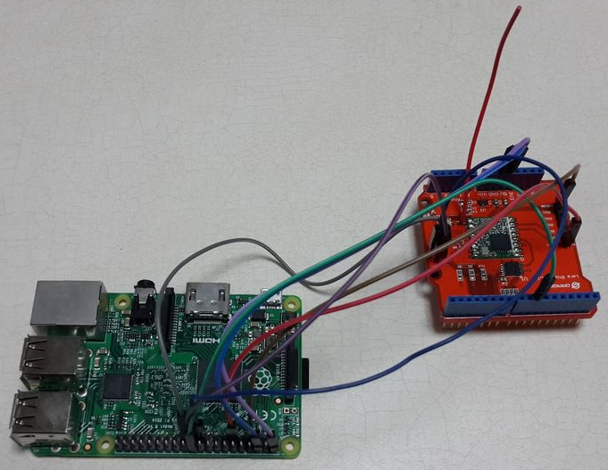
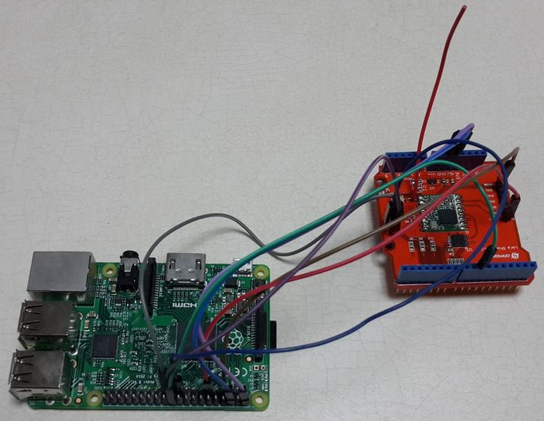
Соедините плату Lora Shield и Raspberry Pi как показано выше. Затем запустите проброску пакетов (packet forwarder) от рута. Затем мы можем получить Gateway ID и увидим результат запуска так, как это показано на следующем рисунке:
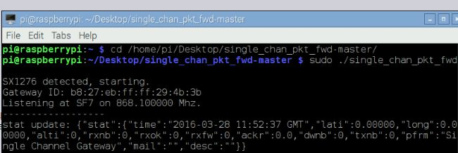
Так же, можно посмотреть стату шлюза (Gateway status) на странице https://staging.thethingsnetwork.org/gatewaystatus... . По этому URL необходимо будет найти ваш Gateway ID, после чего можно увидеть статус чтения/записи на вашем шлюзе. Если вы видите, что статус шлюза установлен как Активный, это свидетельствует о том, что LoRaWAN-шлюз работает!
Обратите внимание: если пересыльщик пакетов (packet forwarder) показывает сообщение "unrecognized transceiver", это значит что Raspberry Pi не увидела плату LoRa Shield, и в этом случае нужно проверить конфигурацию и все проводные соединения.
Шаг 8. Соединение плат Lora Shield и MEGA 2560, загрузка скетча
Соедините платы Lora Shield и Arduino MEGA 2560 и подключите антенну на 868МГц. Соедините плату Arduino с компьютером с помощью USB-кабеля.
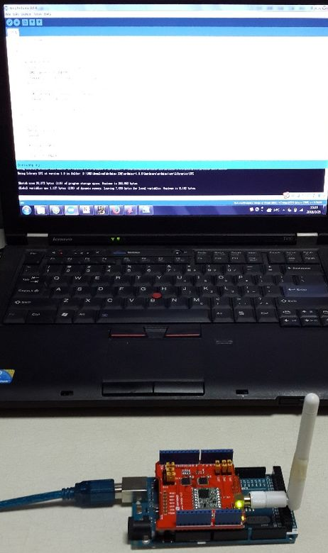
Помимо самой среды разработки Arduino (мы использовали Arduino IDE1.6.8), необходимо установить библиотеку Arduino-LMIC liabrary. Данный репозитарий соедержит библиотеку IBM LMIC (LoraMAC-in-C), немного переделанную для работы в окружении Arduino. Для этой библиотеки допустимо использование трансиверов SX1272, SX1276 и совместимых с ними модулей.
Обратите внимание: эта библиотека требует среды разработки Arduino IDE v.1.6.6 или выше, поскольку она ожидает включенного по-умолчанию режима совместимости C99.
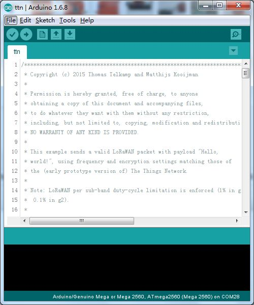
После выполнения всех вышеприведенных действий, необходимо скачать скетч по этой ссылке.
Откройте скетч и измените параметры 'DEVADDR' ,'NWKSKEY','APPSKEY' (значения этих параметров были известны на шаге 6), эти параметры можно найти в районе 40-й строки. Выставите правильный номер порта и тип платы, чтобы загрузить в плату скетч. Результат запуска загруженного скетча можно увидеть в окне монитора последовательного порта:

В то же самое время можно наблюдать соответствующий результат передачи данных на плате Raspberry Pi:
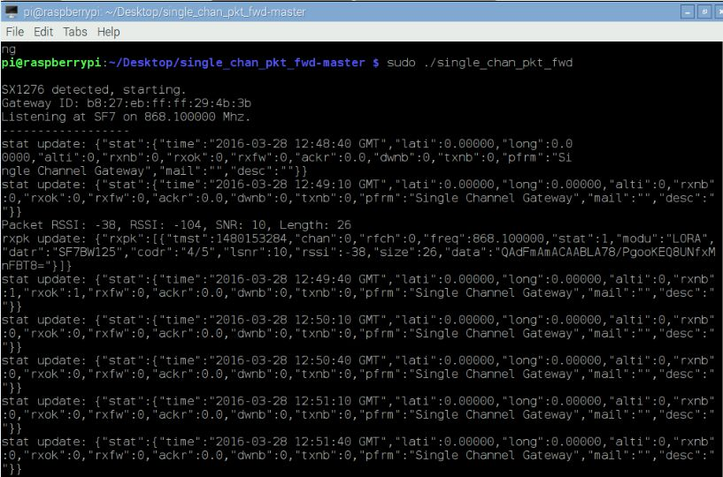
По-умолчанию, узел сети LoRa отправляет данные на 10 частотах, а шлюз получает данные только на одной частоте, таким образом приходит один пакет в 10 минут. На реальном шлюзе видны сообщения каждую минуту. Только с вышеописанным одноканальным шлюзом наблюдается этот феномен. Поэтому мы уже говорили, что это не настоящий шлюз, а шлюз, предназначенный только для целей тестирования. Он работает с сетью LoRaWAN, но полностью с ней не совместим.
Подробне об этом можно почитать по следующим ссылкам:
http://forum.thethingsnetwork.org/t/single-channel-gateway/798/17
http://forum.thethingsnetwork.org/t/single-channel-gateway/798/19
Если вы используете плату Lora Shield v1.1, вместо антенны можно использовать кусок провода,как на следующей фотографии:
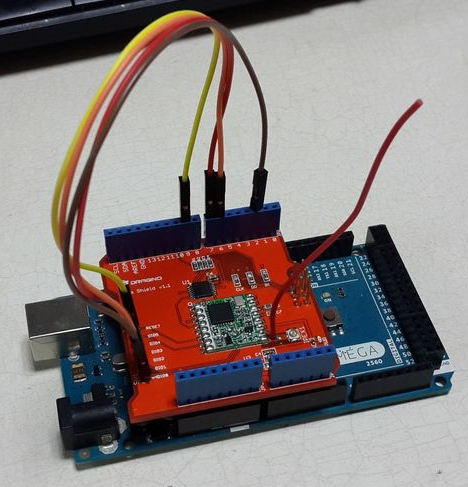
Но в этом случае нужно следующим образом подправить код:
// Pin mapping
const lmic_pinmap lmic_pins = {
.nss = 10,// Connected to pin D10
.rxtx = LMIC_UNUSED_PIN,// For placeholder only, Do not connected on RFM92/RFM95
.rst = 9,// Needed on RFM92/RFM95? (probably not)
.dio = {2, 6, 7},// Specify pin numbers for DIO0, 1, 2
// connected to D2, D6, D7
};
Шаг 9. Итог
После того, как все будет сделано, можно открыть на сайте TTN страницу приложения (Application), и на ней будут видны сообщения, приходящие от LoRaWAN-шлюза.
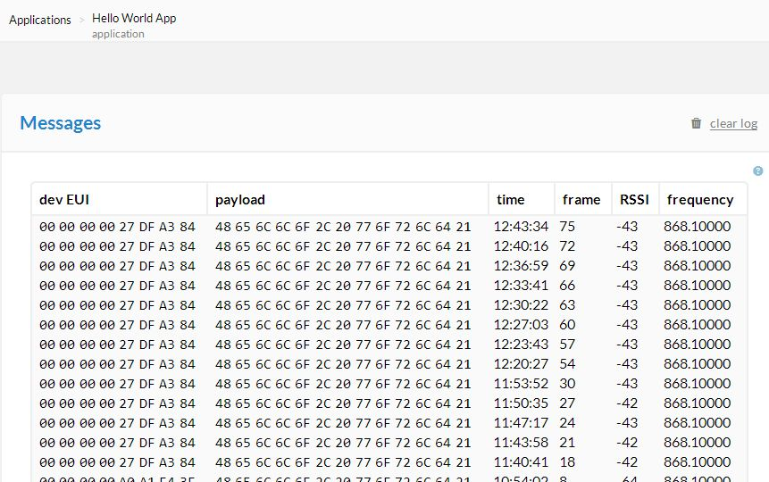
Получить спецификацию на плату LoRa Shield и купить её можно на следующих сайтах:
Плата Lora Shield для RPi: http://wiki.dragino.com/index.php?title=Lora_Shield или пишите на info@dragino.com
Купить плату Lora Shield можно на Aliexpress: http://www.aliexpress.com/store/all-wholesale-products/1390863.html
Шаг 10. Ссылки
Lora Shield Product Page: http://wiki.dragino.com/index.php?title=Lora_Shield
Lora Shield Hardware source: https://github.com/dragino/Lora
TTN Network Wiki: http://thethingsnetwork.org/wiki/Hardware/OverviewGateways#do-it-yourself
TTN Network forum:http://forum.thethingsnetwork.org/
Single channel gateway packet forward source code:https://github.com/tftelkamp/single_chan_pkt_fwd
Arduino-LMIC library:https://github.com/matthijskooijman/arduino-lmic
Sketch lora_shield_ttn:https://github.com/dragino/Lora/blob/master/Lora%20Shield/Examples/lora_shield_ttn/lora_shield_ttn.ino